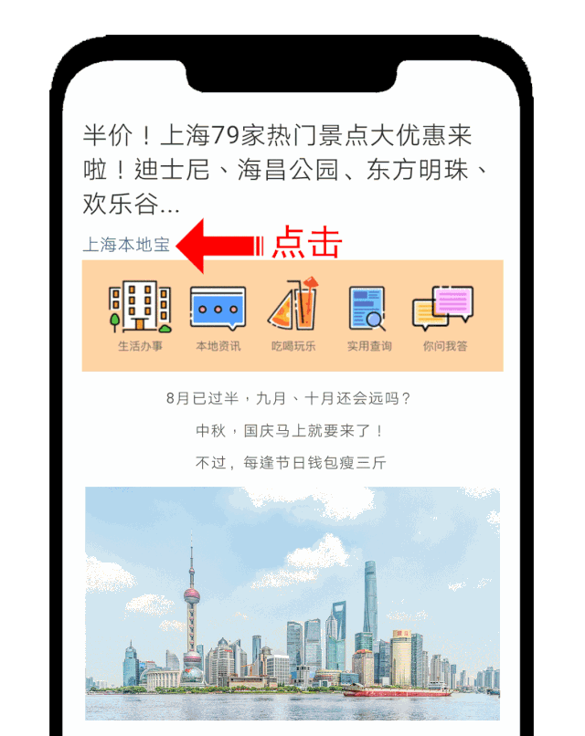
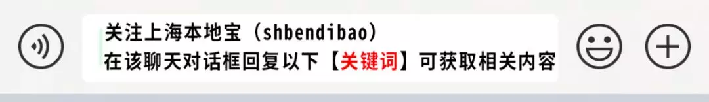
回复【 文博会 】在线购买文博会门票
回复【 拍牌 】查看上海拍牌时间及流程
回复【 美食 】购买上海特惠美食套餐
回复【 十一 】获取上海十一假期精彩活动
是不是感觉马上就是十一假期了
但是我还是没想好去哪里玩！
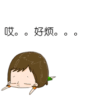
不过，小编偶尔看朋友圈
发现蛮多小伙伴假期都跑深圳玩！
上海的小伙伴去深圳怎么玩？
去这10个地方肯定没错！
▼
提到深圳肯定就能想到邓爷爷了
曾经有朋友跟我说
来深圳没有和邓爷爷的雕像合张照
就像去北京没有爬长城一样
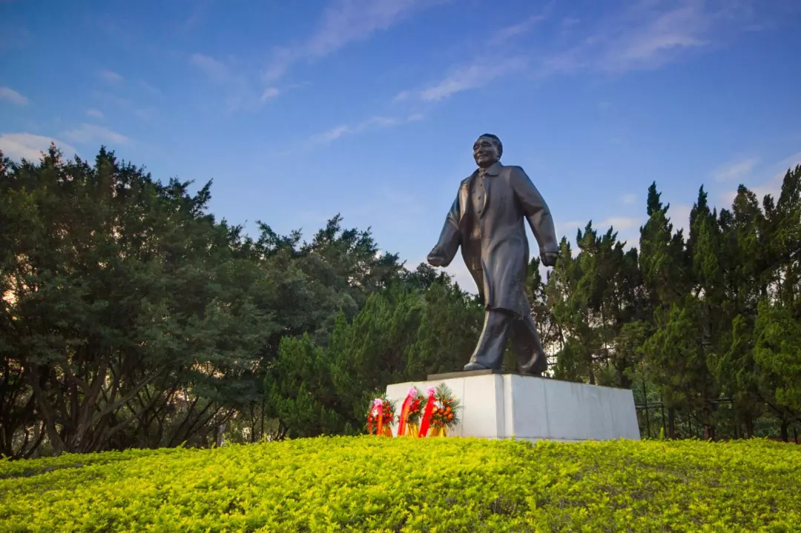
邓爷爷的雕像坐落在莲花山山顶上
很多人会在这里合影
在山顶回望
可以看到深圳全景，亮丽壮观
而且攀登莲花山，真的一点都不费力
不喜欢爬山的同志们也可以试试
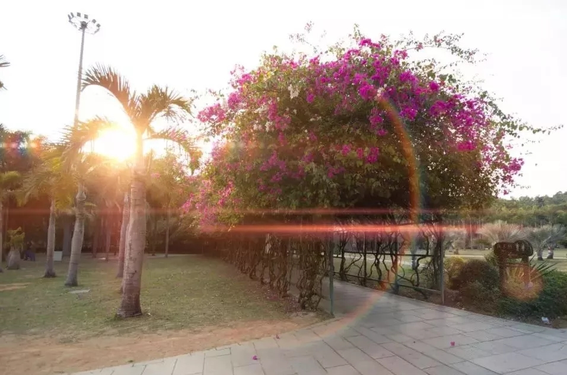
而且莲花山上可以野餐、放风筝
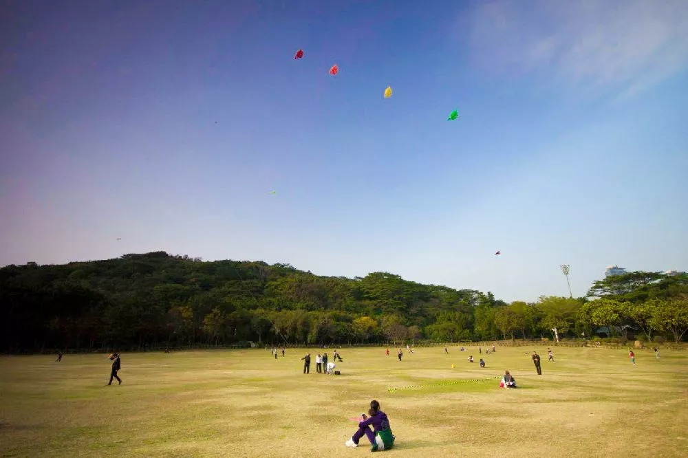
晚上还可以看灯光秀
注意灯光秀时间
是每周五、周六、节假日晚
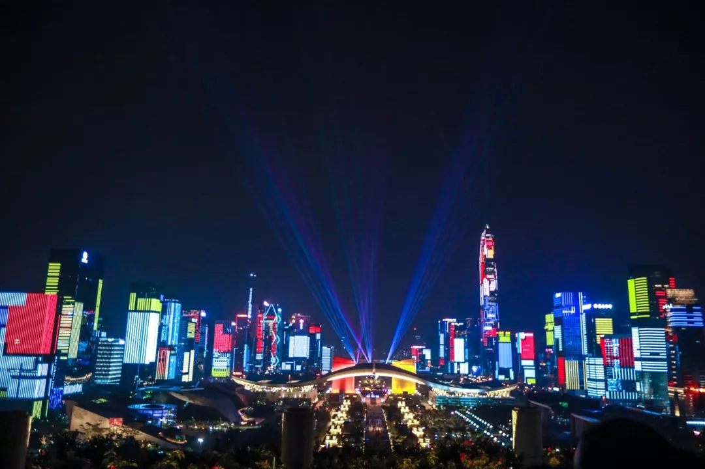
一次莲花山，准没有错！
除了看风景，莲花山还有一个独特的功能！
——相亲
琳琅满目的个人资料介绍
也是莲花山一道亮丽的风景线哦！
地址: 福田区红荔路6030号
门票： 免费
交通： 4号线莲花北/少年宫站、3号线莲花村/少年宫站
停车指南：
莲花山公园内有3个停车场，其中：一个在东南门关山月美术馆附近，一个在西门新洲路附近，一个在北门彩田村附近也有一个停车场
深圳市中心区灯光秀表演时间: 从2019年9月20日开始至10月15日，每天晚上举行三场灯光表演，具体时间为19:30、20:30、21:00。
深圳欢乐谷的名气就不用我说了吧
有雪山飞龙、过山车、太空梭、
发现者、激流勇进等100多个项目
累了还有表演节目可以看
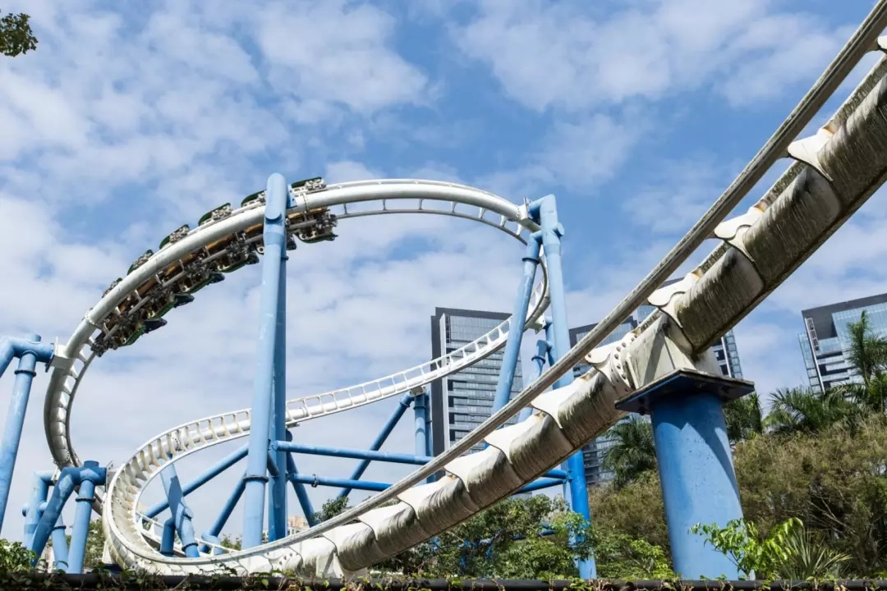
当然，夏日必去玛雅水上乐园
而且欢乐谷实行的是一票通玩制
一张门票可以玩水陆两园所有项目
当然也包括水公园啦
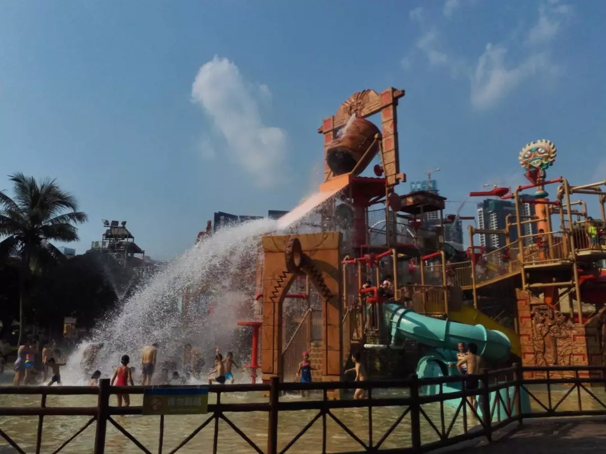
地址: 深圳市南山区深南大道9037号
门票 ：
日场：成人现场买票230元
购票: 关注 上海本地宝 微信公众号，点击首页菜单栏【 特惠门票 】搜索框输入关键词【 欢乐谷 】即可获取优惠门票购买入口
以前说到深圳的地标
可能想到的都是地王大厦
但是现在嘛
可是平安金融中心啦
去一个城市不去它的地标打卡
不是白去了么
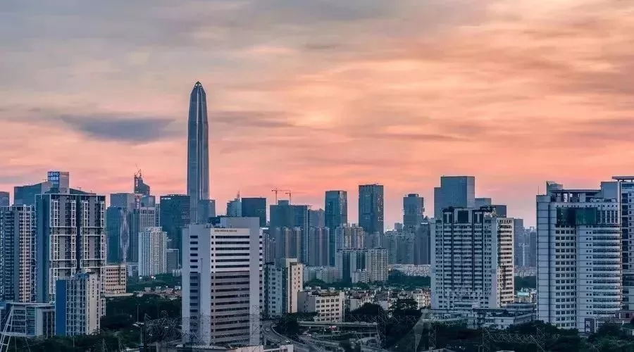
图源：摄图网
平安金融中心高599米，共118层
是目前深圳第一高楼
位居全球第四，华南第一
其中云际观光层位于
平安金融中心第116层(541米)
对外开放参观
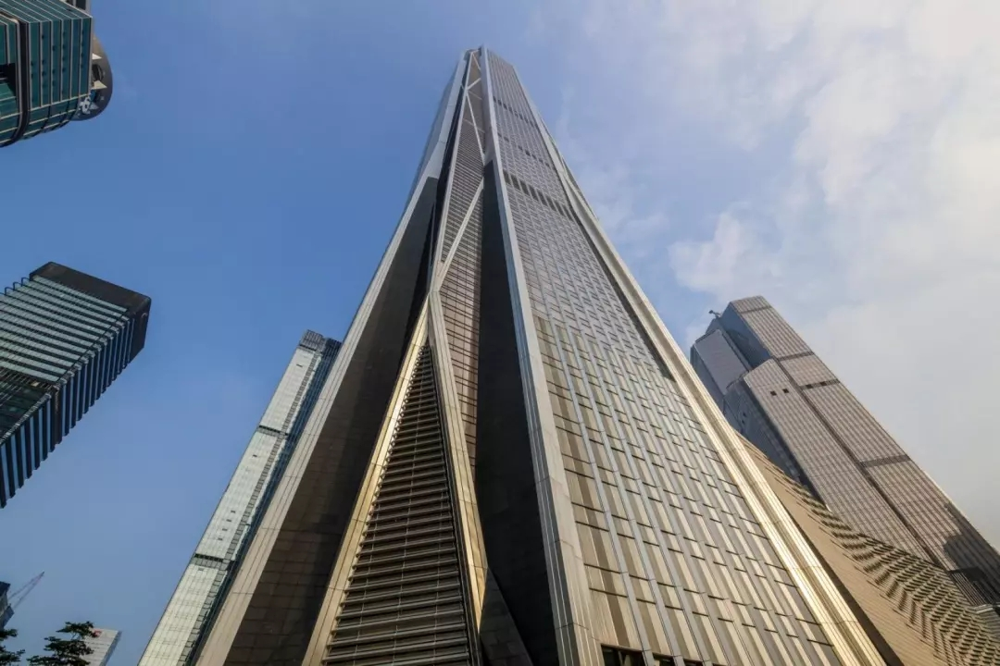
地址: 福田区益田路5033号平安金融中心116层
开发时间： 9:00-22:00
入场时间： 9:00 - 21:15，入场后是不限观光时间的，可自由离场
门票: 现场买200元/人，微信上预订价180元
购票: 关注 上海本地宝 微信公众号，点击首页菜单栏【 特惠门票 】搜索框输入关键词【 平安金融中心 】即可获取优惠门票购买入口
交通: 地铁1、3号线购物公园站D出口左侧
为什么推荐深圳湾公园呢
因为在深圳生活的人
下班后或者周末都会选择
去深圳湾公园走走逛逛
不是有句话说
“去一个城市，旅游景点不可少
当地人常去的地儿更不可少”么
这里可以观看潮汐和大海
可以跑步骑车
日出露天广场看日出
红树林海滨公园还能看到白鹭飞翔
“落霞与孤鹜齐飞”说的大概就是这里了
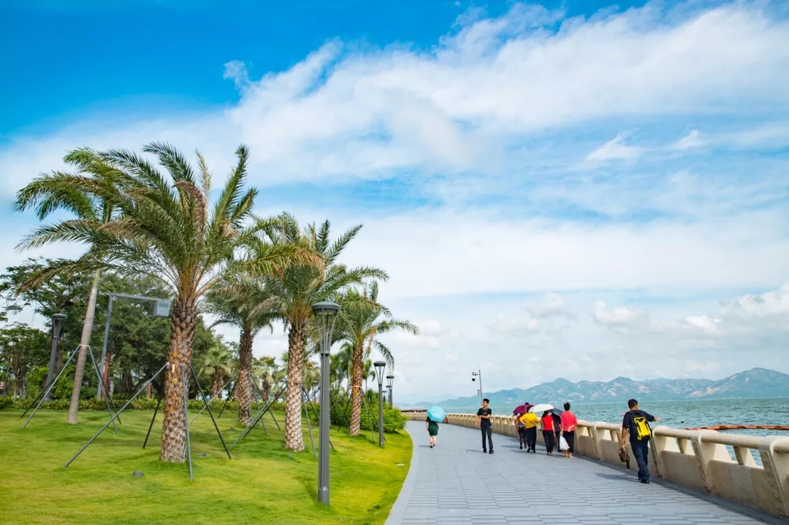
其中深圳湾公园西段的颜值很高
从红树林公园西行漫步可一直到蛇口哦
地址: 深圳市南山区
门票： 免费
交通: 地铁9号线深圳湾公园站
深圳大学
号称最美高校TOP6
这里你可以乘坐校园巴士
也可以骑着单车到处逛逛停停
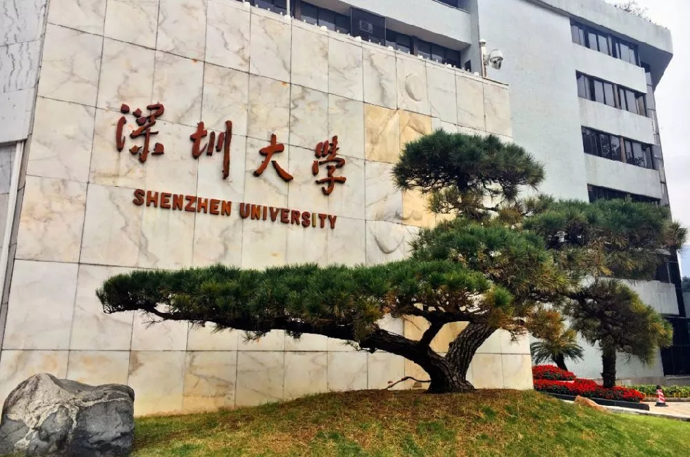
图源：摄图网
看看深大的高尔夫球场、荔枝园、
也许可以溜进教室里旁听课程哦，
假装自己还年轻~
小编当时也进去旁听了
做了回深大学子！
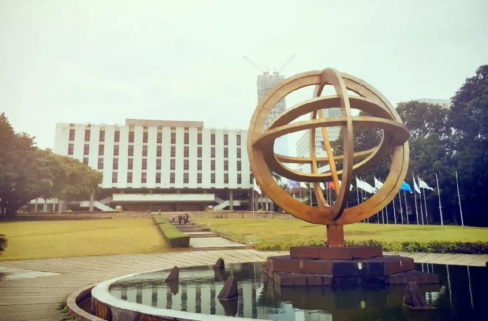
图源：摄图网
地址: 深圳市南山区南海大道3688号
门票： 免费，校园里有餐饮
交通: 地铁1号线(罗宝线)深大站
每个城市不都有那么一条街么
东门的存在
可能就像西安的回民街北京的簋街
武汉的户部巷、南京的夫子庙
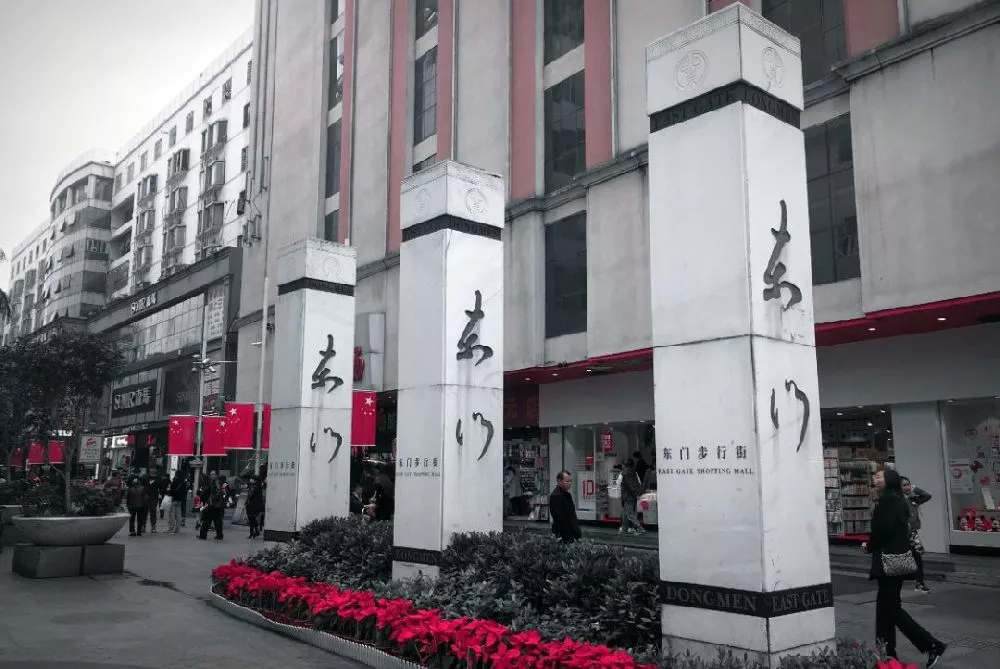
图源：摄图网
在这条深圳最著名的步行街
花一天半天的时间
吃吃吃逛逛逛
也是一个不错的选择
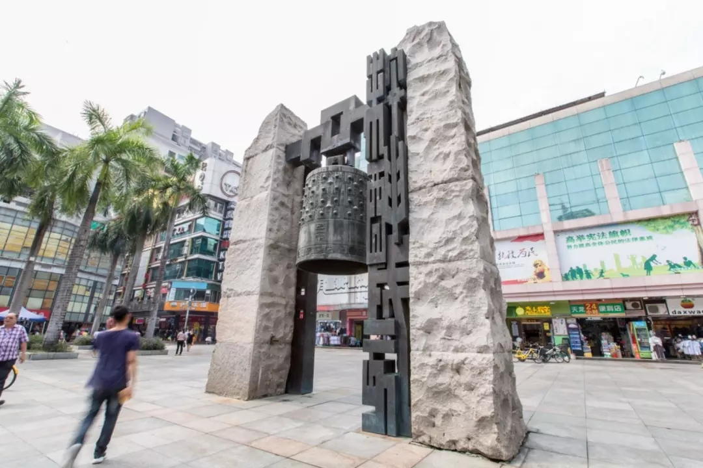
地址: 深圳市罗湖区东门步行街
门票： 免费，消费自付
附近站点: 老街(地铁站)、湖贝(地铁站)、国贸(地铁站)、东门(公交站)、湖贝中路(公交站)
深圳文青的网红打卡地点
华侨城创意园是由旧厂房改造而成的工作室
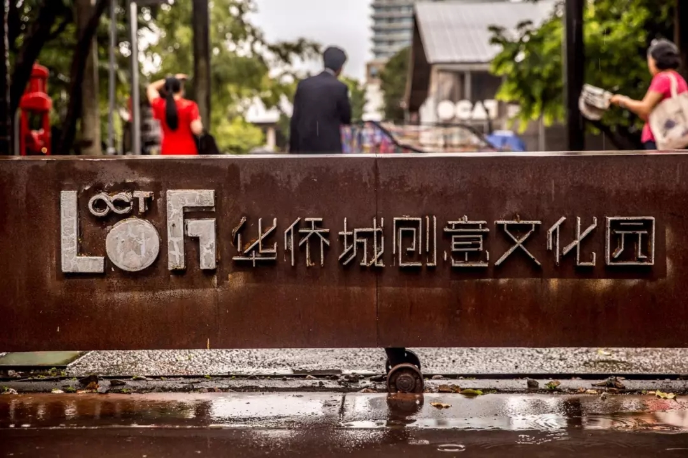
里面有许多概念性餐厅、咖啡厅和跳蚤市场
深圳最文艺的书店也在这里
喜欢复古文艺范的小伙伴一定不能错过!
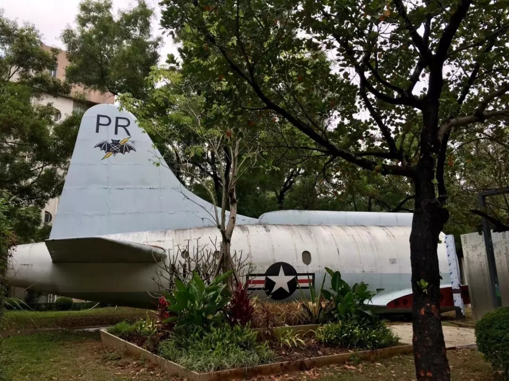
地址: 南山华侨城创意园
门票： 免费，消费自付
附近站点: 侨城东(地铁站)、康佳集团(公交站)、创意文化园(公交站)
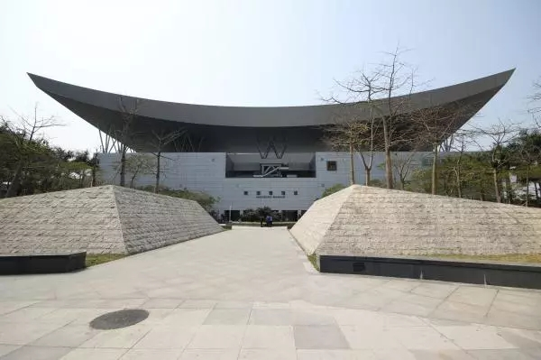
前深圳博物馆正在举办大汉海昏侯展哦
将持续至7月28日
现场有很多金光闪闪的金子
感兴趣的可以去看看
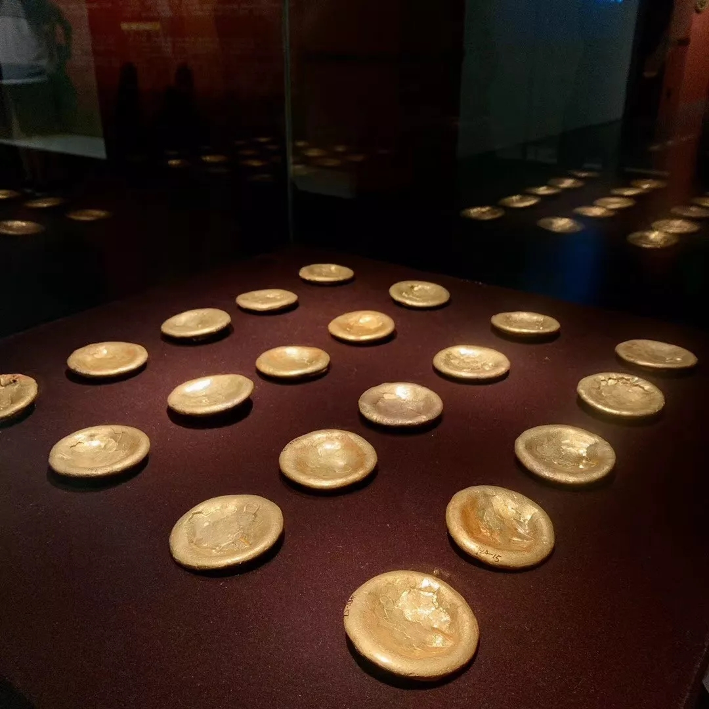
地址: 福田区福中路市民中心A区
开放时间： 10:00-18:00(17:30停止入场，周一闭馆，重要节假日期间开放，重要节假日后的第一天闭馆)
门票： 免费
地铁： 市民中心站B出口(2号线、4号线)
这条长不到250米、宽不到4米的小街
东侧属深圳，西侧属香港
是“一街两制”的缩影
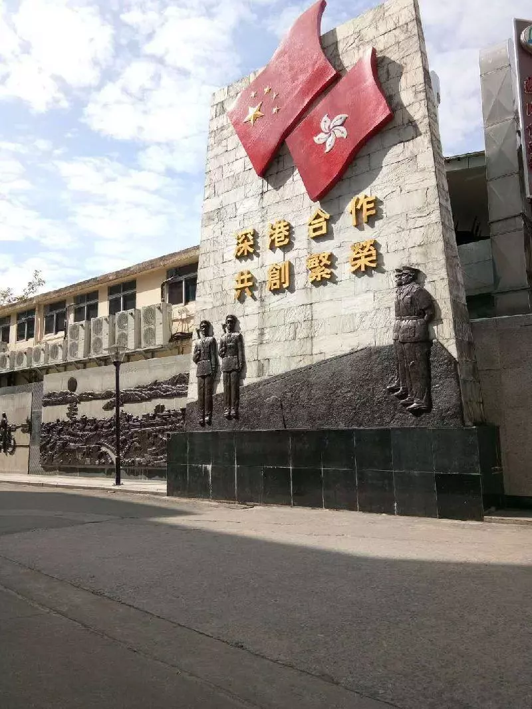
这是全世界独一无二的“一街两制”街、
“社”与“资”的地理分界街、
街心以“界碑石”为界
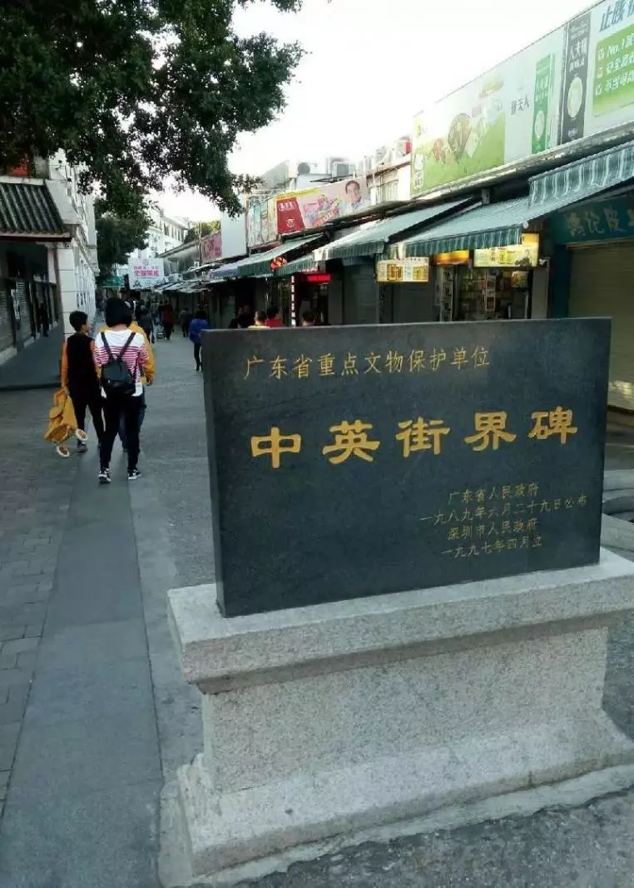
这里品种齐全，数量繁多，
琳琅满目，美不胜收。
曾一度被认为是“购物天堂”
不过去之前要先预约哦
地址: 深圳盐田区沙头角街道
门票： 免费，要换区参观证，记得带身份证现场的自助机上取证。
办证服务大厅工作时间： 上午8:00-12:00，下午13:00-16:00
交通 ：
乘坐公交至三家店-公交站下车，沿深沙路向南走500米即到中英街联检大楼。
至中英街-公交站，下公交后步行可至
深圳是一个沿海城市
去深圳怎能不看海呢？
大小梅沙小编就不说了
你萌都知道
今天在这里就给大家推荐
大鹏半岛
这里沿岸分布着大大小小十几个沙滩
如较场尾、金沙湾、西涌、东涌、桔钓沙等
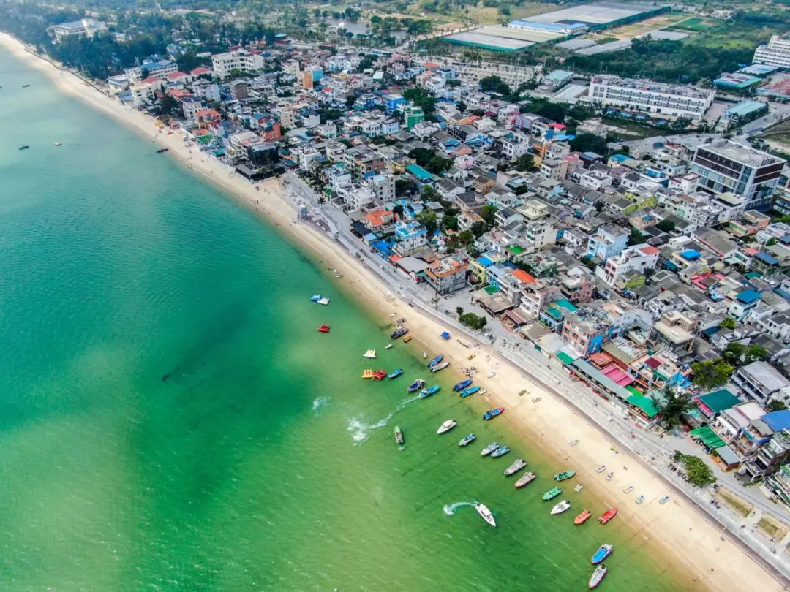
在这里
你可以逛古城游古寺住民宿
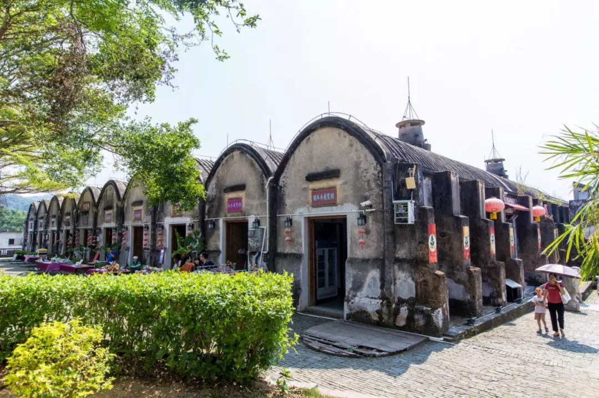
在这里
帆船、游艇、海钓、
潜水全都可以玩！
地址: 深圳市大鹏新区
价格： 各沙滩不一样，有的要收费，有的免费。游玩项目需要收费，请以实际收费为准。
项目推荐地： 大鹏游艇会(游艇、海钓、帆船、潜水，等等)、西涌情人岛也可以潜水，海钓也可以去南澳，住民宿可以去杨梅坑
交通： 深圳市区可以乘坐公交到大鹏中心站，然后转乘公交到各沙滩
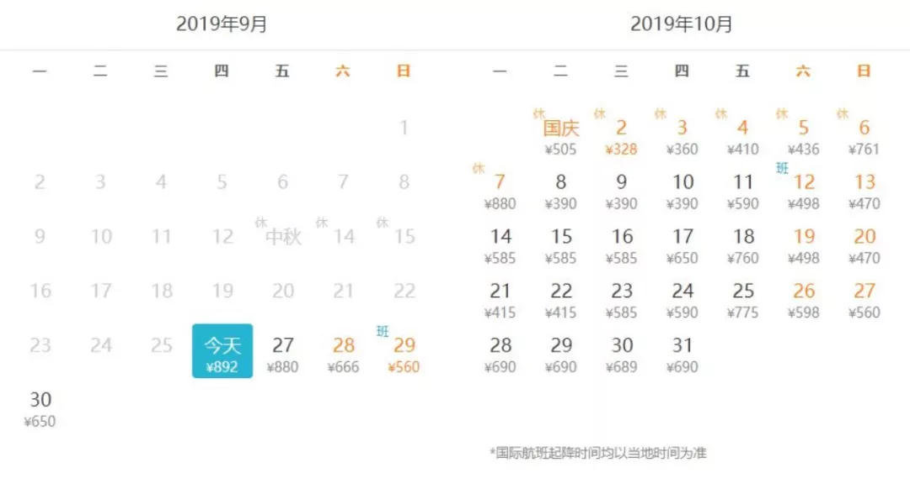
如果去深圳玩，这篇攻略
绝对能给你省去很多功夫
收藏好啦！
还有什么想要知道的
也可以留言，小编知无不言！
毕竟小编也是在深圳呆了几年的人啊！
▌说明：本文由上海本地宝编辑整理发布，转载请注明！
▌来源：深圳生活宝典综合
▌编辑：Rachel
▌商务合作：电话：4009999087 QQ：4009999087
注：手机QQ添加时，若无法找到，请选择“找公众号”即可添加
小编爱鸡腿 快点 在看 给小编加只鸡
微信扫一扫
关注该公众号